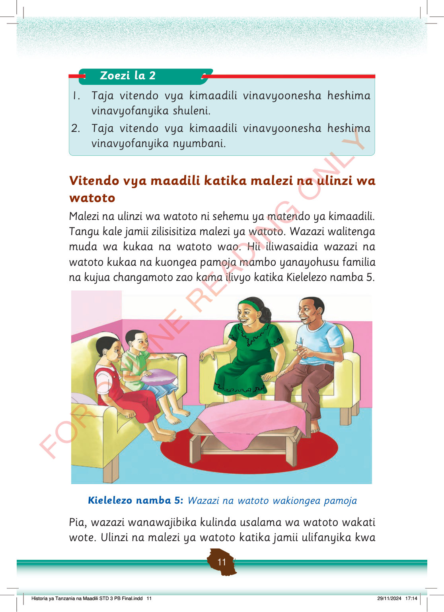

Zoezi la 2
1.
Taja vitendo vya kimaadili vinavyoonesha heshima vinavyofanyika shuleni.
2.
Taja vitendo vya kimaadili vinavyoonesha heshima vinavyofanyika nyumbani.
Vitendo vya maadili katika malezi na ulinzi wa watoto
Malezi na ulinzi wa watoto ni sehemu ya matendo ya kimaadili.
Tangu kale jamii zilisisitiza malezi ya watoto.
Wazazi walitenga muda wa kukaa na watoto wao.
Hii iliwasaidia wazazi na watoto kukaa na kuongea pamoja mambo yanayohusu familia na kujua changamoto zao kama ilivyo katika Kielelezo namba 5.
Wazazi na watoto wamekaa sebuleni wakiongea pamoja. Wanaonyesha upendo, ushirikiano na malezi mema ya familia.
Kielelezo namba 5: Wazazi na watoto wakiongea pamoja
Pia, wazazi wanawajibika kulinda usalama wa watoto wakati wote.
Ulinzi na malezi ya watoto katika jamii ulifanyika kwa